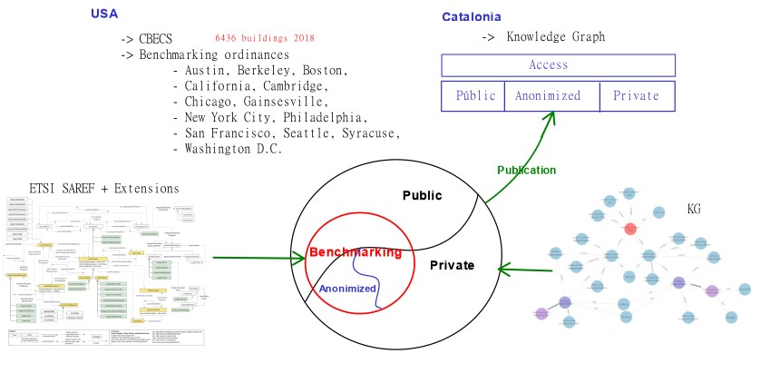

Each dataset was analysed by providing information regarding the publisher or provider, the data owner and rights holder,
licensing and access considerations, and a description, type, comments and problems table for each of the attribute
present in the dataset.
Datadis datasets
Publisher / provider: Datadis platform (giving access to different energy distributors' databases from Catalan patrimony data).
Data owner / rights holder: Catalonia government.
License and access considerations: In spite of being public assets' data the information stored in this datasets
is private and could be used for bad purposes. Hence, this information falls into our private and anonymized
access categories. Its license's restrictions is strong which means that only authorized users are allowed to see the
entries in detail. Aggregated by any parameter e.g. temporal or by administrative divisions would make this data anonymized. This
action would allow us to give access to an extended number of users.
Data size: Consist of 81601183 entries in total (5.26 GB) split into 81 files of about one million entries
each (around 67 MB each).
Serialization 81 csv files.
GPG patrimony dataset
Publisher /provider: "Gestió de Patrimoni de la Generalitat" that can be translated into the Catalan
Patrimony Management organization.
Data owner / rights holder: Catalonia government.
License and access considerations: The attributes selected from this dataset that meets the use cases
requirements might neither be sensible nor represent any harm for public use. However, it is not clear which type
of license is attached to this dataset forcing us to impose limits on any kind of publication. This situation includes
the selected attributes and made us classify this data into the same categories from the previous two datasets:
private and anonymized data access.
Data size: This dataset consist of 4331 patrimonies. (1.013 MB)
Serialization: Single csv file.
Gemweb datasets
Publisher / provider: Gemweb platform.
Data owner / rights holder: Catalonia government.
License and access considerations: The data coming from this datasource was gathered from a private
company with a framework of access granted to our organization for a limited period of time.
The nature of the information stored in any of the Gemweb extracted files is private. This fact made this data
be from private or anonymized access categories.
Only data-owners can access to granular information and only a small set of users can access to the
aggregated ones.
Entities dataset
Data size: Consist of 45 entities. (14.8 kB)
Serialization: Single csv file.
Buildings dataset
Data size: Consist of 1681 entries. (353 kB)
Serialization: Single csv file.
Supplies dataset
Data size: Consist of 2472 entities. (387 kB)
Serialization: Single csv file.
Cadastral datasets in INSPIRE format
Publisher / provider: "Dirección General del Catastro", which in English is translated to Directorate
General for Cadastre, through the "Sede Electrónica del Catastro" or Cadastral Electronic Site.
Data owner: Directorate General for Cadastre. Spain (author and owner).
License and access considerations: Transformation of the original data is required previous
its public or private, and commercial or personal use. It is not allowed to use this data to offer a service
that supersede the services provided by the Cadastal Electronic Site. The use of this data would imply the
acceptance of missing, inaccurate or out of date entries assuming the responsibility of what this can
provoke to the outputs of a service that depends on this data.
Following the previous considerations, DGC's cadastral information could be classified within the public access category
giving important information to enable the dimension required for geographical aggregation within the anonymized data
category.
Massive download of INSPIRE formatted data is enabled through a service called "atom" in compressed format (zip) files.
Three atom URLs allows the access to cadastral parcels', addresses' and buildings' data grouped by province and provides links
to the compressed datasets by municipality. With each municipality URLs everyone could access to download three compressed
files for each municipality.
Each cadastral parcel compressed file contains beyond the cadastral parcels gml file a gml file from the cadastral zoning
and an xml with the dataset metadata.
Within the address compressed file there are the gml file with the addresses available for the municipality and
its xml metadata file.
Lastly, the building compressed file contains a buildings' gml file, a buildings' part gml file and another gml file
for other constructions in addition to the metadata xml file.
We are only aware of the building, address and cadastral parcel gml files for our use cases.
Cadastral parcels datasets
Data size: Single file's number of entries and its corresponding size varies according to the entities
present in each municipality. In total there are 947 municipalities in Catalonia which means that we are dealing
with 947 gml files (7.51 GB) for cadastral parcels. Due to the transformation needed to get the desired EPSG projection
we processed those files into a new set of 947 gml files (6.04 GB).
Serialization: Multiple (947) gml (geography markup language) files, one for each municipality of Catalonia.
This dataset is pre-processed and contains Catalonia cadastral parcels information with projected to EPSG:4326 coordinates using QGIS.
Every attribute has this path: gml:FeatureMember - ogr:qgis - ... before the attribute name shown in the table below.
Buildings datasets
Data size: Single file's number of entries and its corresponding size varies according to the entities
present in each municipality. In total there are 947 municipalities in Catalonia which means that we are dealing
with 947 gml files (6.47 GB) for buildings. Due to the transformation needed to get the desired EPSG projection
we processed those files into a new set of 947 gml files (3.61 GB).
Serialization: Multiple (947) gml files, one for each municipality of Catalonia.
This dataset is pre-processed and contains Catalonia buildings information with projected to EPSG:4326 coordinates using QGIS.
Every attribute has this path: gml:featureMember - ogr:qgis - ... before the attribute name shown in the table below.
Address datasets
To extract the addresses' information needed we are using both the original and the pre-processed gml files due to the
projection executed by QGIS removed some data from the original file in the process.
From the original gml file we pretend to extract among others the postal code, municipality, and the province whereas
from the pre-processed file the intention is to extract the projected to EPSG:4326 coordinates.
Original datasets
Data size: Single file's number of entries and its corresponding size varies according to the entities
present in each municipality. In total there are 947 municipalities in Catalonia which means that we are dealing
with 947 gml files (2.54 GB) for addresses.
Serialization: Multiple (947) gml files, one for each municipality of Catalonia.
Every attribute has this path: gml:FeatureCollection - ... before the attribute name shown in the table below.
Pre-processed datasets
Data size: Single file's number of entries and its corresponding size varies according to the entities
present in each municipality. Due to the transformation needed to get the desired EPSG projection
we processed the original files into a new set of 947 gml files (1.38 GB).
Serialization: Multiple (947) gml files, one for each municipality of Catalonia.
This dataset is pre-processed and contains Catalonia cadastral addresses with projected to EPSG:4326 coordinates using QGIS.
Every attribute has this path: gml:featureMember - ogr:qgis - ... before the attribute name shown in the table below.
Geonames dataset
Publisher / provider: GeoNames database through the geonames.org portal.
Data owner: The GeoNames gazetteer is an aggregation of hundreds of public data sources. Original data's ownership
depends on the data source.
License and access considerations: GeoNames data is under a Creative commons attribution 4.0 license. Because this
type of license has no constrain for publishment we have categorized this dataset in the public accesss type.
Data size: The 2020's original Geonames datadump consist of 11985741 features. Given that our use cases are
bounded by the Catalonia region we have shortened to 8195 the number of features in the datadump for meeting only
a Spanish scale. For convenience, we have split this files into three: one for the regions level of Spain (74 kB), one for
the province level of Catalonia (238 kB) and the latter for municipalities level of Catalonia (9.3 MB).
Serialization: Multiple (3) ttl (turtle) files, one for the Spanish regions, one for Catalonia provinces and the last
containing Catalonia municipalities.
Some of the fields present in the table are written using the prefix gn: <https://www.geonames.org/ontology#>.
Certificates of energetic efficiency of buildings dataset
Publisher / provider: Published at "dades obertes catalunya" (Catalonia open data) portal
provided by the "Institut Català d’Energia (ICAEN)" (Catalan Energy Institute).
Data owner: Catalonia open data.
License and access considerations: This data is under a "Llicència oberta d'ús d'informació Catalunya" license
(information use open license) that allows anyone to reuse, distribute, diffuse and transform the information without
any temporal restriction. Detailed information can be found following this
link
(only available in Catalan language).
Data size: Consist of 1371456 energy performance certificates (510.8 MB).
Serialization: Single csv file.
More information regarding this dataset can be found in this
link.
Potential license
The intention of this project is to give three access alternatives. Each one would have a license attached to it. The
three access levels are graphically depicted below.

In the figure the main set of data is represented as the outer circle that is split into two distinct access levels:
public and private access. As a subset, the circle in red depicts the information regarding our use cases which besides
the two access levels another one, that splits the private access adding access to anonymized data, is represented.
The anonimized data can be either publicly or privately accessed depending on the agreements with the private data owners. This
fact made us formulate distinct license types for each access variation.
Public data access license
For the public access case the most suitable license chosen should be compatible with the public datasets used to create
the knowledge graph.
We have found two main constrains for the public datasets used. Those are:
the requirement of data transformation previous its publishment and,
the ensurance of not offering a cadastral service that might supersede the Cadastral Electronic site.
Our application require a data transformation process and doesn't provide a service comparable to that of the Cadastral
Electronic site; therefore, an open access license with a disclaimer pointing to the datasources licenses was selected.
The most common aggregations would be geographical as well as temporal in distinct combinations. Being, were available,
monthly and by postal code with a minimum number of entities the finest aggregation possible for anonymized data access.
For now, only private users are allowed to access anonymized data through a login mechanism which means no public license
is selected for this access type. Terms and conditions of the private license are restrictive at proprietary level sharing terms and conditions
with the private access type license.
Private data access license
No public license is selected for this access type. Only the owners of the data can access to their private information.
Authentication mechanisms would be used for this purpose. More details on the terms, conditions and security for this
kind of access are not part of this project. For now, private and anonymized access is locally implemented, if the system
is intended to be put into production a cybersecurity layer should be developed to manage this two access types.
Resource naming strategy
The methodology used for this project suggest us to first, select the form of URI we are going to use. Second, to choose
a controlled domain should be set. Then when necessary a path for the URIs should be defined. Finally, the pattern for
ontology classes, properties and individuals should be designed.
URI form
The ontological terms defined don't represent a huge amount of triples, therefore we selected as best form for
vocabularies and all terminological objects to be in the hash form.
Our datasets' sizes are in different scales, in most of the cases the smaller ones links the bigger ones entities.
Being the energy consumption timeseries data, the cadastral information and the Certificates of energetic efficiency
of buildings the set of the largest datasets, the best approach for the URI definition is to use the slash form combined
with the hash form. This would provide us access to data in groups rather than the whole knowledge graph in a single URI.
Domain
We have the following domains for the project that are under our control.
http://bigg-project.eu
https://bigg-project.eu (redirected from the previous)
For our use cases purposes we have selected the http://bigg-project.eu as the base domain.
Security encryption and verification would represent a barrier from some servers to access the linked data generated
for this project.
Path
Not to conflict with other uses of the base domain e.g. the project's webpage and its contents we have defined
as a main path the following: http://bigg-project.eu/ld/ .
Patterns for ontology classes, properties and individuals
Having established the domain and the main path, the next step is to set up a path that distinguishes the assertional box (ABox)
and the terminological box (TBox) clearly. A big part of the terminological box is the ontology with all of its terms.
On the other hand, the assertional box consist practically of individuals. Thus, we have selected two paths for this two cases.
Ontological terms path
The base of the ontological terms should follow this pattern as base:
http://bigg-project.eu/ld/ontology/.
Since the BIGG project consist of more use cases than the ones mentioned in this document, the ontology is meant to be
modular. Each module is focused in a specific domain of knowledge that extends the core.
Therefore, we have set: http://bigg-project.eu/ld/ontology/[moduleName]#[className]
as a good URI pattern to follow that deals with a modular ontology design. Within [moduleName] it could also
be included some information about the ontology or the module versions.
An example of a class defined within the ontology is stated as follows: http://bigg-project.eu/ld/ontology/Core#Measurement.
Likewise, a property should be described like this: http://bigg-project.eu/ld/ontology/Core#connectsAt.
Individuals path
Similar to what was declared for the ontological terms, the next URI was selected as the base URI for all the individuals.
http://bigg-project.eu/ld/resource/
Then, to add verbosity to the kind of data we are referring to, a URI that points to a resource should follow
the structure: http://bigg-project.eu/ld/resource/[className]/[identifier].
Where [className] encloses the name of the populated class from the ontology, accompanied by a unique identifier
for that class in [identifier]. This identifier can also contain a hash depending on the size of the data of the
same declared class and on whether the intention is to access this data individually or in batch.
To ensure the paths for individuals of different classes are not the same, the strategy is to identify the unique identifier
present per concept in each dataset, if not present the procedure is to create an identifier based on a combination of the
information available that ensure uniqueness.
One example is the case of an individual that represents an organization: http://bigg-project.eu/ld/resource/Organization/gemweb/8017
where gemweb/8017 represents the identifier of a Organization class subject that states also the provenance
of this information.
Data provenance could be solved using distinct mechanisms, in our project the definition of a proper URI that contains
information regarding the dataset is the selected solution. An additional URI for the default value could be created
as a selection mechanism, it would replicate the value the selected data source becoming the default.
In addition, to ensure linkage among the data coming from the datasources a sameAs relation should be established between
the datasets.
This W3C document exposes that the Coolest URIs for the Semantic Web are
those that are designed with Simplicity, Stability and Manageability in mind.